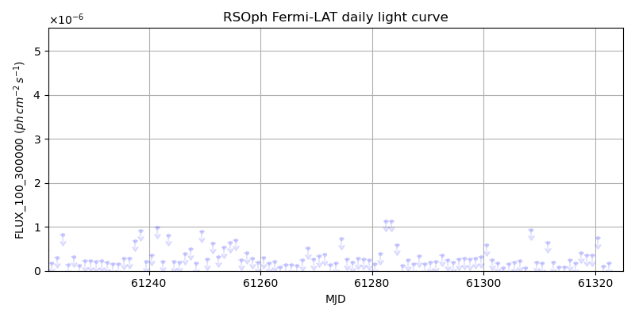
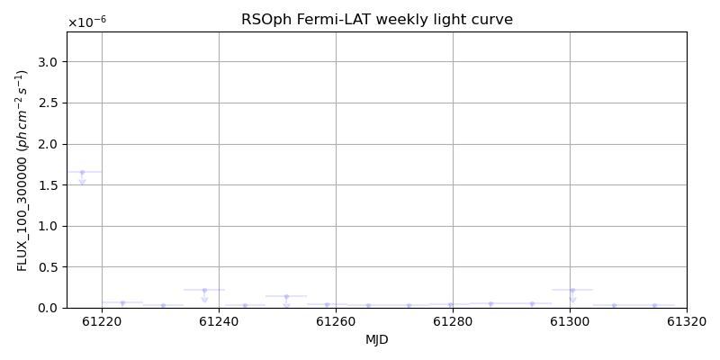
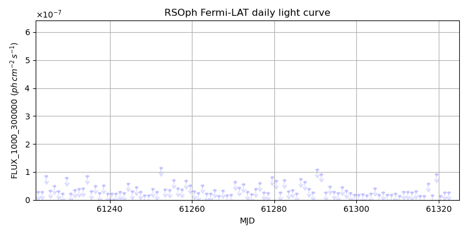
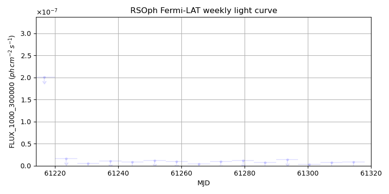

LAT Lightcurve site: https://fermi.gsfc.nasa.gov/ssc/data/access/lat/msl_lc/source/RS_Oph
NED: Query
Time of last update of this page: UT: 2026-10-10 15:25 (MJD: 61323.642)
| Property | Value |
|---|---|
| R.A. | 17:50:13.20 |
| Dec. | -6:42:28.8 |
| z | 0.000 |
| 3FGL SpectrumType | |
| 3FGL PL Index | -1.00 |
| 3FGL Flux_100_300000 | -1.00e+00 |
| 3FGL Flux_1000_300000 | -1.00e+00 |
| 3FGL Flux >200 GeV | -1.00e+00 |
| 3FGL Extrap. Crab >200 GeV | -1.00 |
| 3FGL Flux After EBL Absorption >200GeV | -1.00e+00 |
| 3FGL EBL Crab Fraction >200GeV | -1.00 |

| MJD | dMJD | Flux | dFlux | Frac3FGL | FracCrab>200GeV | EBLFracCrab>200GeV |
|---|---|---|---|---|---|---|
| 61318.50 | 0.50 | 3.49e-07 | 0.00e+00 | 0.00 | 0.00 | -0.00 |
| 61319.50 | 0.50 | 3.52e-07 | 0.00e+00 | 0.00 | 0.00 | -0.00 |
| 61320.50 | 0.50 | 7.53e-07 | 0.00e+00 | 0.00 | 0.00 | -0.00 |
| 61321.50 | 0.50 | 1.10e-07 | 0.00e+00 | 0.00 | 0.00 | -0.00 |
| 61322.50 | 0.50 | 1.69e-07 | 0.00e+00 | 0.00 | 0.00 | -0.00 |

| MJD | dMJD | Flux | dFlux | Frac3FGL | FracCrab>200GeV | EBLFracCrab>200GeV |
|---|---|---|---|---|---|---|
| 61286.50 | 3.50 | 4.82e-08 | 0.00e+00 | 0.00 | 0.00 | -0.00 |
| 61293.50 | 3.50 | 5.60e-08 | 0.00e+00 | 0.00 | 0.00 | -0.00 |
| 61300.50 | 3.50 | 2.17e-07 | 0.00e+00 | 0.00 | 0.00 | -0.00 |
| 61307.50 | 3.50 | 3.07e-08 | 0.00e+00 | 0.00 | 0.00 | -0.00 |
| 61314.50 | 3.50 | 3.00e-08 | 0.00e+00 | 0.00 | 0.00 | -0.00 |

| MJD | dMJD | Flux | dFlux | Frac3FGL | FracCrab>200GeV | EBLFracCrab>200GeV |
|---|---|---|---|---|---|---|
| 61318.50 | 0.50 | 1.58e-08 | 0.00e+00 | 0.00 | 0.00 | -0.00 |
| 61319.50 | 0.50 | 9.05e-08 | 0.00e+00 | 0.00 | 0.00 | -0.00 |
| 61320.50 | 0.50 | 1.38e-08 | 0.00e+00 | 0.00 | 0.00 | -0.00 |
| 61321.50 | 0.50 | 2.77e-08 | 0.00e+00 | 0.00 | 0.00 | -0.00 |
| 61322.50 | 0.50 | 2.73e-08 | 0.00e+00 | 0.00 | 0.00 | -0.00 |

| MJD | dMJD | Flux | dFlux | Frac3FGL | FracCrab>200GeV | EBLFracCrab>200GeV |
|---|---|---|---|---|---|---|
| 61286.50 | 3.50 | 7.31e-09 | 0.00e+00 | 0.00 | 0.00 | -0.00 |
| 61293.50 | 3.50 | 1.38e-08 | 0.00e+00 | 0.00 | 0.00 | -0.00 |
| 61300.50 | 3.50 | 3.27e-09 | 0.00e+00 | 0.00 | 0.00 | -0.00 |
| 61307.50 | 3.50 | 7.31e-09 | 0.00e+00 | 0.00 | 0.00 | -0.00 |
| 61314.50 | 3.50 | 8.08e-09 | 0.00e+00 | 0.00 | 0.00 | -0.00 |
--------------------------------------------------------- Using user-supplied coords: 17:50:13.20 -6:42:28.8 2000 --------------------------------------------------------- FLWO UT night of: 2026-10-11 Local Sid. @ Midnight: 00:55 Sunset (-15.0) (local, UT): 19:04 02:04 Sunrise (-15.0) (local, UT): 05:18 12:18 Moonrise (local, UT): Moonset (local, UT): Moon phase: 0.01 --------------------------------------------------------- AzTime LSID UT Obj_el Obj_az Mn_el Mn_az Sep. --------------------------------------------------------- 19:04 19:58 02:04 41.1 224.0 -16.1 264.2 68.2 19:34 20:29 02:34 36.3 231.4 -22.3 267.8 67.9 20:04 20:59 03:04 31.1 237.8 -28.5 271.5 67.6 20:34 21:29 03:34 25.5 243.5 -34.7 275.4 67.4 21:04 21:59 04:04 19.7 248.5 -40.8 279.7 67.1 21:34 22:29 04:34 13.7 253.1 -46.8 284.6 66.7 22:04 22:59 05:04 7.5 257.3 -52.7 290.5 66.4 22:34 23:29 05:34 1.5 261.4 -58.4 297.7 66.1 23:04 23:59 06:04 -4.7 265.3 -63.6 307.3 65.7 23:34 00:29 06:34 -11.6 269.2 -68.1 320.3 65.4 00:04 00:59 07:04 -18.0 273.2 -71.3 338.2 65.1 00:34 01:29 07:34 -24.4 277.4 -72.6 0.4 64.7 01:04 01:59 08:04 -30.7 281.9 -71.5 22.7 64.4 01:34 02:30 08:34 -36.9 286.9 -68.3 40.8 64.0 02:04 03:00 09:04 -42.9 292.7 -63.9 54.1 63.7 02:34 03:30 09:34 -48.6 299.5 -58.7 63.8 63.4 03:04 04:00 10:04 -54.0 307.9 -53.1 71.2 63.0 03:34 04:30 10:34 -58.6 318.5 -47.3 77.2 62.7 04:04 05:00 11:04 -62.3 331.7 -41.4 82.2 62.4 04:34 05:30 11:34 -64.6 347.7 -35.3 86.6 62.1 05:04 06:00 12:04 -65.0 5.3 -29.2 90.6 61.8 05:18 06:14 12:18 -64.5 13.1 -26.5 92.4 61.7 --------------------------------------------------------- Source never above horizon of 55.0 deg. Dark hours >55 deg.: 0.00